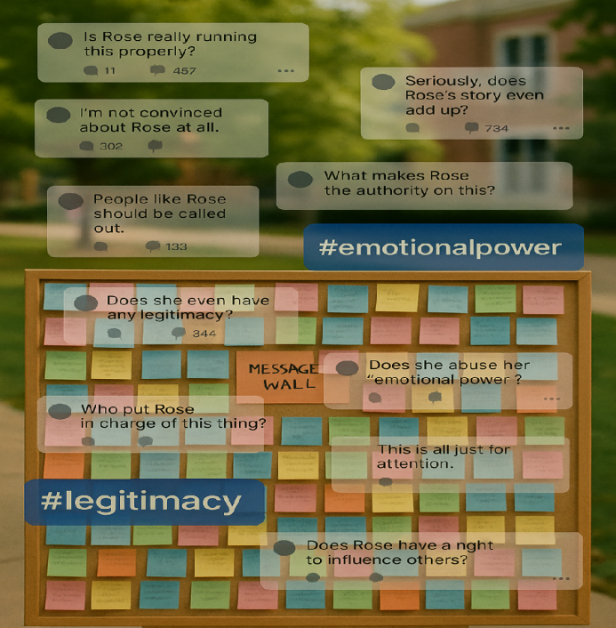

Online comments began to question Rose's "legitimacy", and the message wall became the focus of discussions on "emotional power".
Jun gathers his courage and anonymously posts a painting on the wall to express his feelings.
Rose wrote a long article by the wall to clarify her original intention
Rose didn't respond. She just posted the next sentence: "Not all voices need your consent to exist."